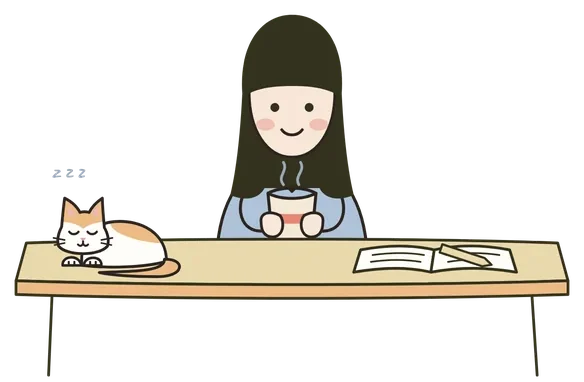
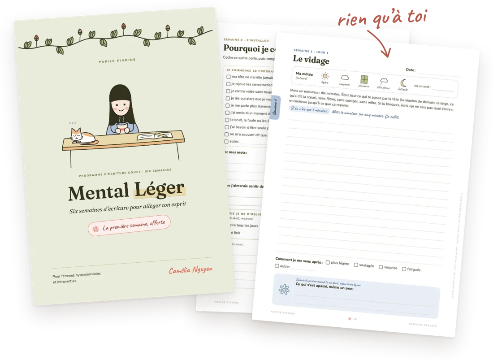

L’écriture thérapeutique, c’est écrire sur ce qu’on ressent pour se sentir un peu mieux. Les chercheurs l’appellent plutôt écriture expressive, et le psychologue américain James Pennebaker l’étudie depuis les années 1980. D’après lui, elle aide surtout quand on cherche à comprendre ce qu’on vit, pas seulement à vider son sac, et elle ne remplace ni un psy ni les amis.
Je ne suis ni psy ni chercheuse. Je suis hypersensible et introvertie, j’écris quand j’en ai besoin, et je lis le livre de James Pennebaker et Joshua Smyth, Écrire pour se soigner, pour comprendre ce que je fais quand j’écris. Ce que je partage ici vient de ce livre et de ma propre expérience.
James Pennebaker, psychologue à l’université du Texas, a commencé dans les années 1980 à demander à des gens d’écrire sur ce qu’ils n’avaient jamais dit à personne, et à regarder ce que ça changeait pour eux. C’est de là que vient ce qu’on appelle aujourd’hui l’écriture expressive.
Dans leur livre, Joshua Smyth et lui proposent d’écrire vingt à trente minutes sur quelque chose qu’on n’a jamais raconté. Le titre parle de soin, mais les auteurs restent honnêtes sur ce que montrent leurs recherches. Par exemple, la baisse de tension observée dans les premières études était bien réelle, mais trop petite pour compter d’un point de vue médical.
De ce livre, je garde surtout une idée : écrire pour comprendre, et pas seulement pour vider son sac. Les auteurs expliquent que pleurer ou crier un bon coup ne laisse pas de bienfait durable dans les études sérieuses, et que ce qui compte, c’est de reconnaître ce qu’on ressent et de lui donner un nom.
Mettre un mot sur une émotion lui enlève un peu de sa force. Ils racontent une recherche de l’université de Californie à Los Angeles, où des personnes qui avaient peur des araignées et qui mettaient leur peur en mots arrivaient ensuite à s’approcher un peu plus d’une araignée.
Pour moi, c’est un peu ce que fait une page quand j’ai la tête pleine. Quelques minutes d’écriture, et la tête plus légère. Mon écriture douce vient un peu de là.
Elle ne remplace pas une thérapie, ni un médecin, ni un psy. Pennebaker et Smyth le disent eux-mêmes : quand on souffre au point que la vie de tous les jours en est touchée, il vaut mieux voir un professionnel, et l’écriture aide plutôt à garder l’équilibre. Ils écrivent aussi que « l’écriture ne devrait pas remplacer l’amitié ».
« L’écriture ne devrait pas remplacer l’amitié. »
Moi, il y a eu une dépression, et douze ans de psychanalyse. L’écriture est venue à côté, jamais à la place. J’en parle un peu plus sur ma page À propos.
Ce n’est pas non plus une routine à tenir. Dans les enquêtes des auteurs, la plupart des personnes qui tiennent un journal y écrivent une ou deux fois par semaine, et très peu tous les jours. Moi, ça dépend des semaines, certaines semaines j’écris tous les jours et d’autres presque pas. Parfois c’est court, parfois j’écris plusieurs pages et ça peut être très long. Je ne mets pas de minuteur, j’écris jusqu’à ce que ça s’arrête, et je ne relis presque jamais. Bao dort à côté de mon carnet, quand il ne gratte pas sa couverture.

Leur livre a aussi des pages honnêtes sur les moments où écrire n’aide pas. C’est le cas quand on écrit pour éviter d’agir sur quelque chose qu’on pourrait changer, quand on écrit pour impressionner plutôt que pour comprendre, quand on ne fait que se plaindre de quelqu’un sans se regarder soi-même, ou quand on s’analyse tellement qu’on finit par tourner en rond.
Ça donne une petite question à se poser de temps en temps.
Est-ce que cette page t’aide à comprendre, ou est-ce qu’elle tourne en rond ?
L’écriture thérapeutique, telle que la décrivent Pennebaker et Smyth, c’est écrire vingt à trente minutes sur ce qui pèse le plus. Mes pages n’ont rien à soigner, mais elles font du bien, et tu les ouvres quand tu en as envie. Elles sont plus courtes, cinq à dix minutes, et tu choisis quelque chose qui pèse un peu, pas le plus lourd.
Les bons moments ont leur place aussi. Les auteurs écrivent qu’écrire sur un grand changement heureux, comme un nouveau travail, un déménagement ou une rencontre, aide aussi, parce que ça demande de vraiment réfléchir. C’est ce que j’essaie de faire avec Papier Pivoine : des pages d’écriture douce qu’on ouvre parce qu’on en a envie, et le bien qu’elles font vient en plus.
Rejoue un bon moment de ta semaine
Si tu veux essayer tout de suite :
Tu peux t’arrêter au bout de deux minutes, ou continuer si tu en as envie. Et si un jour une page te remue trop, tu as le droit de la fermer et de passer à autre chose.

Mental Léger · La première semaine
Si tu veux continuer, ma première semaine d’écriture douce est offerte, avec 23 pages à imprimer ou à remplir à l’écran.
Ma semaine offerte →